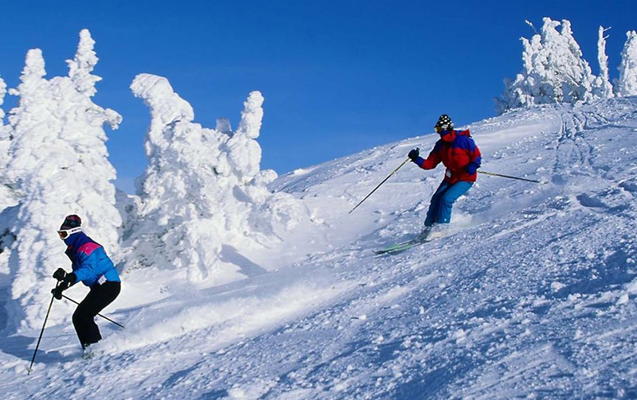

MANALI TOUR FROM CHANDIGARH NO 2
Day 01: Chandigarh - Manali (295 Kms.) : Morning drive from Chandigarh to Manali, on arrival check-in at hotel. Rest of the day free for leisure, dinner and overnight stay at hotel.
Manali is located near the end of the valley on the National Highway leading to Leh. The countryside here is breathtaking. One sees well-defined snow capped peaks, the Beas river with its clear water meanders through the town. On the other side are deodar and pine trees, tiny fields and fruit orchards. It is an excellent place for a weekend. From temples to antiquity, to picturesque sight-seeing spots and adventure activities, Manali is a popular for all seasons and for all kind of travellers.
Day 02: Manali: Morning after breakfast go for city tour visiting Hadimba Devi Temple, Manu Temple, Tibetan Monastery and Vashisht Village. Afternoon free at leisure. Enjoy your dinner in hotel . Dinner and Overnight stay at Manali.
Popular attractions in Manali, Arjun Gufa, Club house, Hidimba Devi temple, Jagatsukh, Kothi, Manu temple, Mountaineering Institute, Nehru kund, Rahala waterfalls, Solang valley, Tibetan monasteries, Vashisht hot water springs and temples.
Day 03: Manali: Full day excursion visiting Kothi Gorge, Gulaba, Marhi, Rohtang Pass - (tourist spot in himalaya having snow all 12 months) is the most visited tourist spot in Himalaya having snow round the year (Upto Snow Line in case Rohtang is closed due to snow fall) and Solang Valley evening return to hotel. Dinner and Overnight stay at Manali.
Rohtang Pass with the height of 3979 m is 51 kms from Manali. It offers a panorama and fabulous mountain view. The pass is open from June to October each year. It is a gateway to Lahaul Spiti, Pangi and Leh valley just as Zojila pass is a gateway to Ladakh. There are beautiful sights of glaciers, peaks and Chandra River flows down in the Lahaul valley.
Day 04: Manali – Chandigarh, Departure
After breakfast drive back to Chandigarh
End of the services.